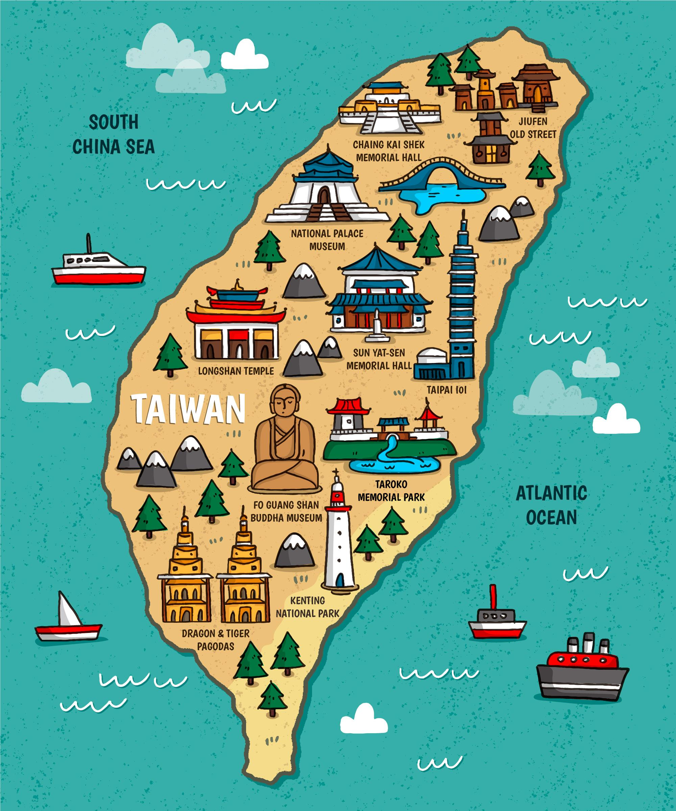
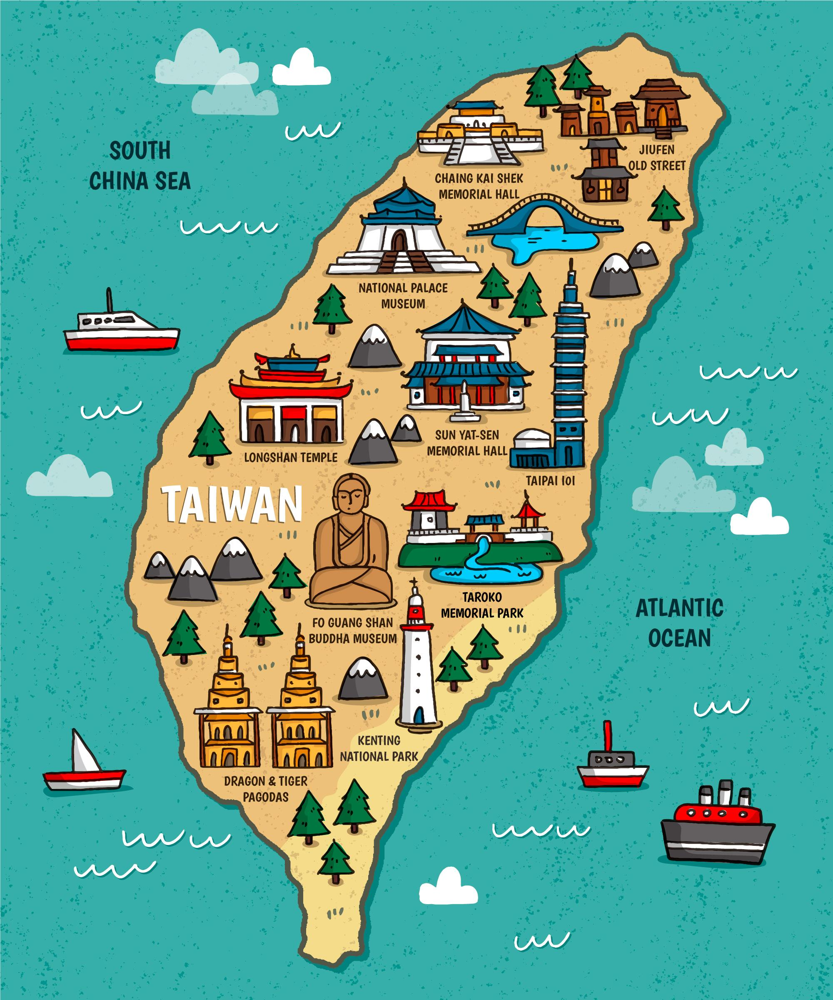
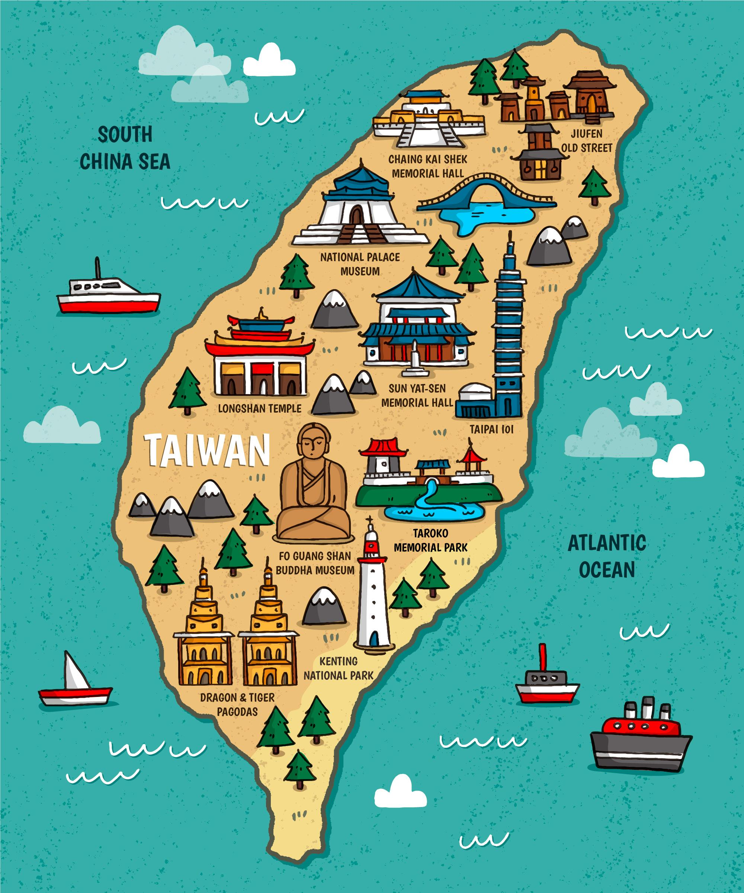
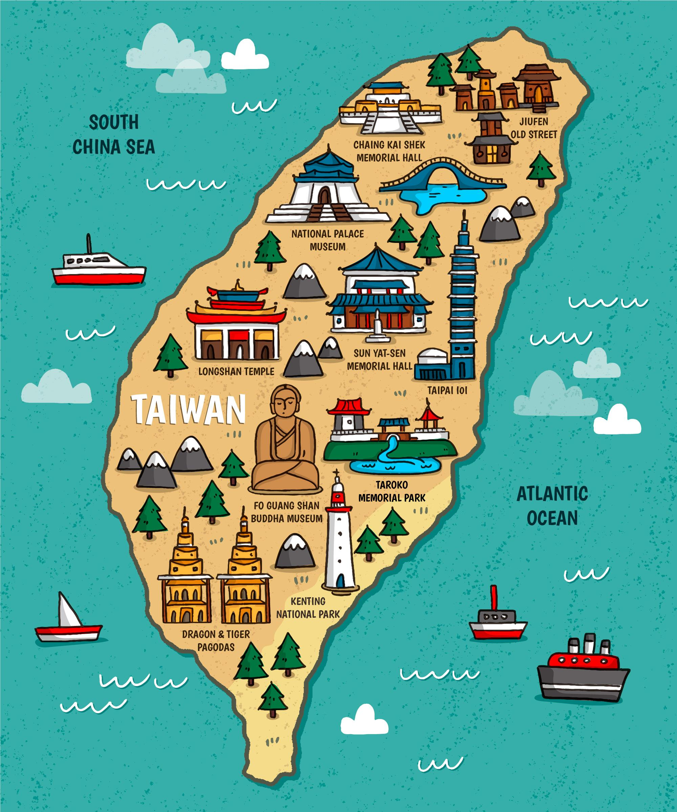

Have you heard of an island in Asia called Taiwan, or probably Formosa? When Portuguese sailors came to Taiwan in 1542, they were shocked how gorgeous this island is, they then noted it on their map as llha Formosa (Portuguese for "beautiful island"). This island is where I call home. The size of this tiny island is 1/4 of New York State, however, surprisingly, Taiwan has 4 million more people compare to the whole New York state! Isn't it crazy? Okay, now, keep reading, and I will give you more introduction and facts about Taiwan. After reading, I know you are going to Taiwan as your next travel destination, so add it to your list before it's too late!
Location: East of Taiwan Strait, west of the Pacific Ocean. Bordered by China to the northwest, Japan to the northeast, and Philippines to the south
Currency: New Taiwan Dollar (NTD)
Religion: mostly Buddhism and Taoism, some no religion, and a few Christianity
Languages: Traditional Chinese, Taiwanese Hokkien, Taiwanese Hakka, and other
aboriginal languages
Economy: Ranking top 20th GDP in the world
Culture: Very diverse! Majority traditional Chinese culture and aboriginal cultures, to Japanese cultural and also from the Western countries